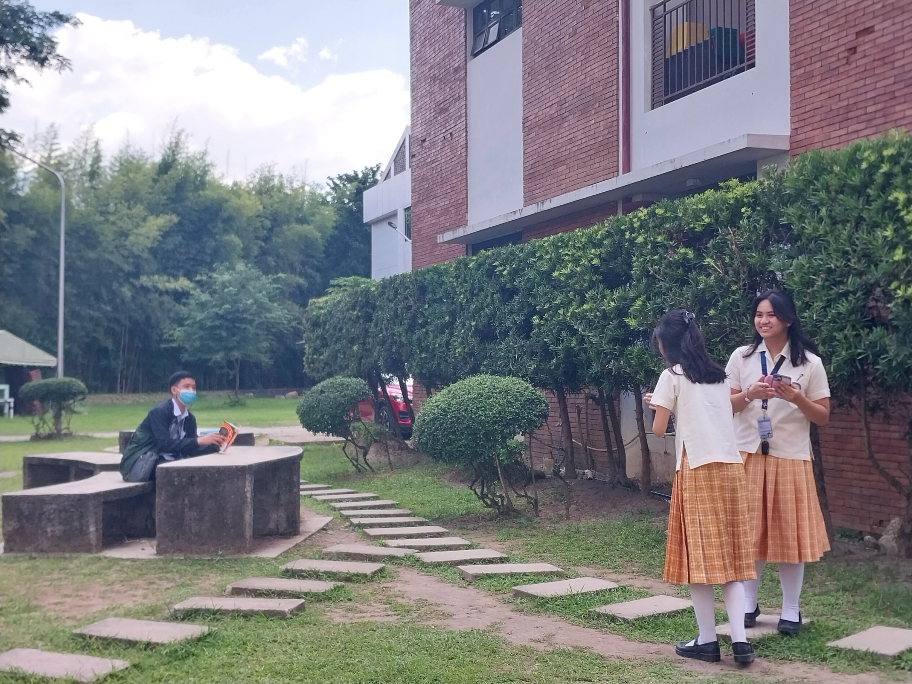
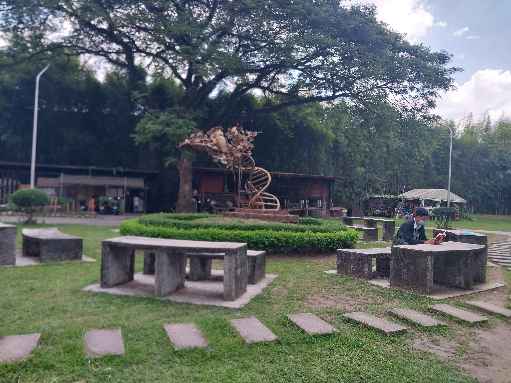
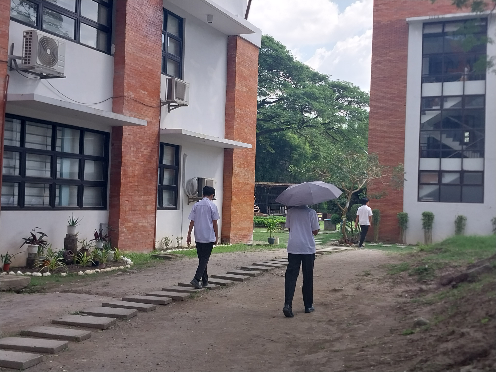
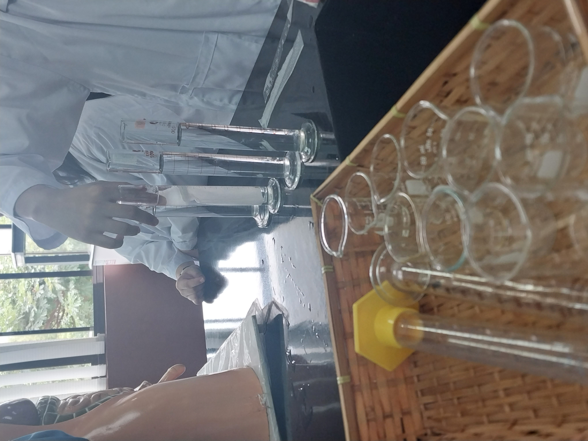

Welcome to Aionopolis Institute of Medicine!
Located in the center of the busy metropolis, Aionopolis Institute of Medicine is a top medical school that has led the way in medical research and education for more than 20 years. Several regulatory bodies have recognized the institute, which is associated with a reputable university.
The college is equipped with cutting edge facilities, such as large classrooms, well-appointed labs, a library full of medical books and journals, and a contemporary auditorium big enough to hold conferences. Additionally, the college is connected to a hospital that offers plenty of chances for students to obtain real-world experience in a variety of specializations.
Many of the highly qualified and experienced faculty members at Aionopolis Institute of Medicine hold prestigious positions in their respective fields. They are dedicated to giving students a thorough understanding of the medical sciences as well as the practical skills necessary to become qualified medical professionals.
The college has a demanding curriculum that covers community health, clinical medicine, basic sciences, and other areas of medical education. A combination of lectures, seminars, hands-on training, and clinical rotations make up the teaching methodology. Additionally, the college gives students the chance to present their work at national and international conferences and encourages them to engage in research activities.
Extracurricular activities are highly valued at Aionopolis Institute of Medicine, where students are encouraged to take part in sports, cultural events, and volunteer work. This instills in students the values of empathy, compassion, and social responsibility in addition to assisting in the development of a holistic personality.
There are students from many cultures and backgrounds in the college's active student body. The college creates an environment that is favorable to learning and encourages students to work together, respect one another, and engage in healthy competition.
Undoubtedly, Aionopolis Institute of Medicine is a top medical school that offers its students a top-notch education along with opportunities for research, hands-on learning, and extracurricular activities. The college is known as one of the greatest medical colleges in the area because of its dedication to quality in medical education and research.
In a groundbreaking innovation, researchers at Aionpolis Institute of Medicine have created a novel drug delivery system that could revolutionize cancer treatments. The nanocarrier-based targeted chemotherapy system, developed using nanotechnology, selectively targets cancer cells while minimizing the toxicity of chemotherapy drugs for healthy cells. In preclinical trials, the system has shown remarkable efficacy against various cancer types, including breast cancer, lung cancer, and leukemia. The researchers believe that this breakthrough could significantly improve the effectiveness of chemotherapy while reducing its side effects for patients. The system is now set to undergo clinical trials in the near future.
AIM has also made waves in the world of sports. The university's basketball team, the Midnight Wolves, recently won the national championship, defeating their long-time rivals in a thrilling final game. The team's star player, senior guard Nathan Roberts, was named MVP of the tournament and is now being scouted by several professional teams.
The university's campus itself is also making headlines. AIM is set to undergo a major renovation project, which will include the construction of new dormitories, classrooms, and athletic facilities. The project is expected to cost $100 million and will be funded by a generous donation from an anonymous alumnus. The university's president, Dr. Maria Rodriguez, expressed her excitement about the project in a recent statement. "This is a historic moment for AIM," she said. "We are committed to providing our students with the best possible learning experience, and this renovation will help us achieve that goal." Overall, AIM is quickly becoming a leader in innovation and academia. With its cutting-edge research, successful sports programs, and state-of-the-art facilities, it's no wonder that the Aionopolis Institute of Medicine is attracting top talent from around the world.